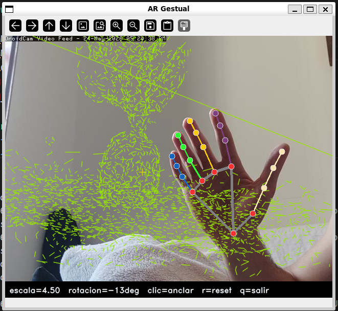

Ejercicios Extra: Reconstrucción 3D, Realidad Aumentada y Control Gestual¶
Descripción general¶
Esta sección documenta la resolución conjunta de tres ejercicios opcionales de la asignatura. Los tres comparten un hilo conductor: un objeto físico real es fotografiado y reconstruido en 3D, el modelo resultante se proyecta sobre la imagen de cámara como efecto de realidad aumentada, y todo el sistema se controla sin contacto mediante gestos de mano. El fichero de entrada de cada pieza es la salida de la anterior.
Fotos del objeto → reconstruct_colab.ipynb → modelo.obj
↓
Cámara → hand_controller.py → HandState → ar_viewer.py → run.py
Enunciados resueltos¶
Ejercicio 7
Crea un efecto de realidad aumentada en el que el usuario desplace objetos virtuales hacia posiciones marcadas con el ratón.
Ejercicio 2
Haz un controlador sin contacto de varios grados de libertad que mida, al menos, distancia de la mano a la cámara y ángulo de orientación. Utilízalo para controlar alguno de tus programas.
| Ejercicio | Técnica principal |
|---|---|
| 🎲 Ej. 8 — Reconstrucción 3D | COLMAP SfM, VGGT Transformer, Poisson mesh |
| 🥽 Ej. 7 — Realidad Aumentada | ARViewer wireframe, ancla ratón, suavizado exponencial |
| 🖐️ Ej. 2 — Control Gestual | MediaPipe Hands, 4 GDL, HandState |
Requisitos y ejecución¶
Entorno local
Python 3.10+, OpenCV 4.9, NumPy 1.26, MediaPipe 0.10, SciPy.
Entorno Colab (solo ejercicio 8)
Google Colab con GPU T4. Instala COLMAP, Open3D y el paquete vggt en las primeras celdas del notebook.
Paso 1 — Reconstruir el modelo 3D (Ejercicio 8)¶
Abre extra_8_7_2/reconstruct_colab.ipynb en Google Colab:
- Entorno de ejecución → Cambiar tipo → GPU T4
- Entorno de ejecución → Ejecutar todo (
Ctrl+F9) - Cuando aparezca la celda de subida, selecciona 40-50 fotos del objeto (JPG/PNG).
- La última celda descarga automáticamente
colmap_model.objyvggt_model.obj.
Paso 2 — Ejecutar el sistema AR con control gestual (Ejercicios 7 y 2)¶
# Con modelo 3D reconstruido:
python extra_8_7_2/run.py --model=vggt_model.obj
# Sin modelo (cubo de referencia):
python extra_8_7_2/run.py
| Acción | Descripción |
|---|---|
| LClick sobre imagen | Anclar el objeto virtual en esa posición |
| Mover la mano | Desplazar, escalar y rotar el objeto en tiempo real |
r |
Resetear escala y rotación al estado inicial |
q / Esc |
Salir |
Arquitectura global¶
flowchart TD
subgraph Colab ["reconstruct_colab.ipynb (Colab T4)"]
F[40-50 fotos JPG/PNG]
F --> SIFT[COLMAP SIFT\n+ exhaustive matcher]
F --> VGGT_I[VGGT inferencia\nfacebook/vggt-1B]
SIFT --> MAP[mapper sparse]
MAP --> POI_C[Poisson mesh\nOpen3D depth=8]
VGGT_I --> CONF[Filtro confianza\n> 0.5]
CONF --> POI_V[Poisson mesh\nOpen3D depth=9]
POI_C --> OBJ_C[colmap_model.obj]
POI_V --> OBJ_V[vggt_model.obj]
end
subgraph Local ["run.py (local)"]
CAM[autoStream\ncámara / vídeo]
CAM --> HC[HandController\nMediaPipe Hands]
HC --> HS[HandState\ndistance · yaw · roll · XY]
OBJ_C -.->|--model| AR
OBJ_V -.->|--model| AR
HS --> AR[ARViewer\nwireframe 3D]
AR --> HUD[draw_hud\nimshow]
MOUSE[Ratón\nLClick] --> AR
end